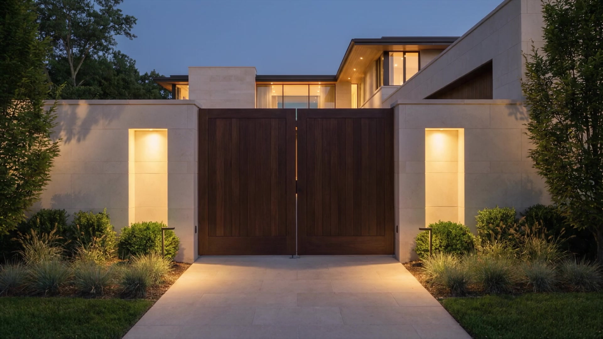
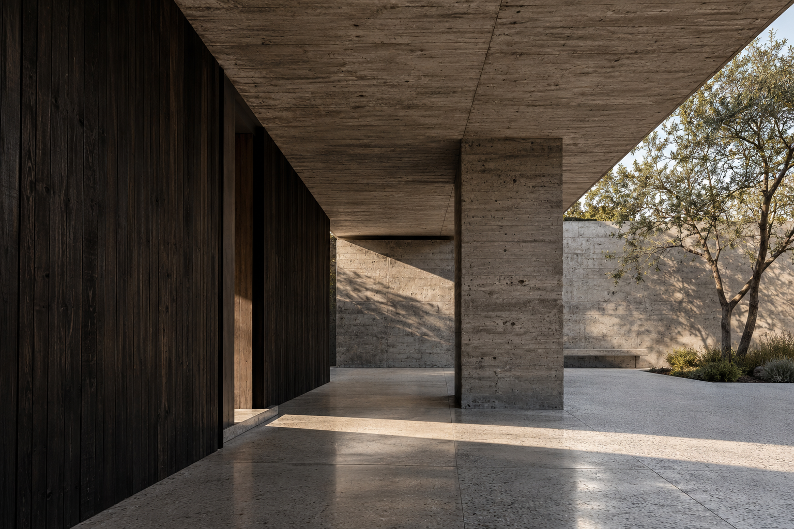
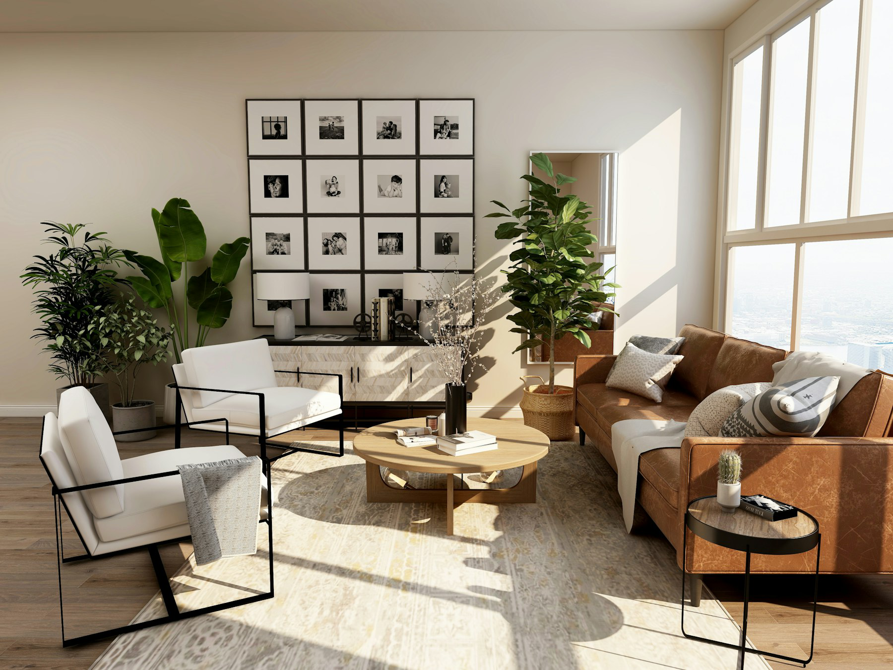
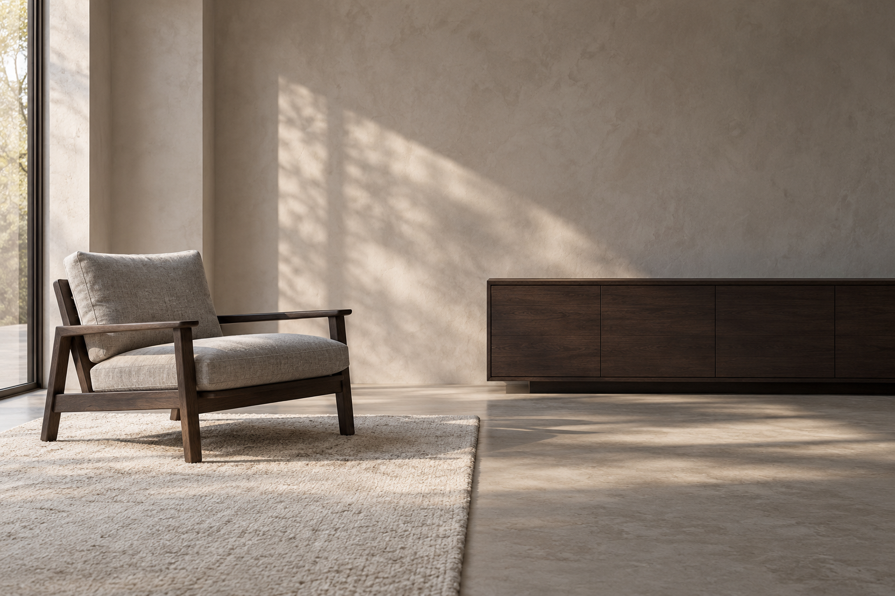

Original opening-door film / 12.04s
Spaces Madeto Feel Like
Home.
Thoughtful interiors and enduring furniture, designed as one complete experience.
Interiors and furniture,
designed as one.
Interior Renovation / Bespoke Furniture
MORI SPACE is an independent interior design studio concept. The work shown explores spatial ideas and is not presented as completed client commissions.
01 / Philosophy

SPACE SHAPES LIFE.
We design spaces that balance functionality, materiality and everyday life, creating calm environments that feel natural and lasting.
Function, material and everyday life, in balance.
N01 / Provisional AI image study
Independent conceptual image.
Separate from the Hero film.
Selected Projects 01
Warm Minimal Living Study
Concept Project /
Spatial Design Study

A study of daylight, seating relationships and the objects of everyday life.
View Project03 / Services
Five disciplines.
One space.Services.
04 / Furniture within SpaceFurniture
Furniture
within SpaceObjects
in relation.
Objects in relation.
Body. Edge. Movement.

01 / Body & form
A place to pause.
02 / Edge & wall
Furniture holds a line.
03 / Space between
Room for movement.
SPACES / FIVE ORIGINAL CATEGORIES
Explore by space.
- Living Room
How do seating, daylight and circulation meet?
- Dining
How does a table gather people within a room?
- Bedroom
How can furniture support rest and daily rituals?
- Home Office
How do focus and everyday living share space?
- Lounge
How can a place invite a longer pause?
PIECES / INDEPENDENT FURNITURE STUDIES
Signature Pieces
Independent concept studies
- Sculpted Lounge Sofa
Proposed Material Direction
Soft-touch upholstery · Solid timber frame
- Solid Wood Dining Table
Proposed Material Direction
Natural oak · Hand-finished joinery
- Accent Lounge Chair
Proposed Material Direction
Textured fabric · Sculpted profile
- Bespoke Sideboard
Proposed Material Direction
Dark stone · Custom architectural detailing
05 / ApproachApproach.
Observe.
Read light, movement and everyday rituals.
Read light and daily rituals.
Compose.
Bring material, proportion and objects into relation.
Bring material and form together.
Refine.
Test the idea for clarity and human use.
Test for clarity and human use.